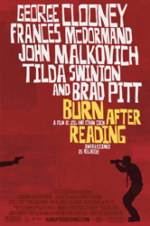
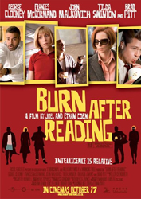
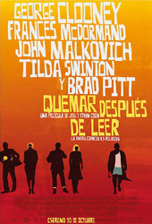
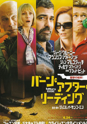
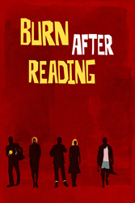

George Clooney
Elizabeth Marvel
Frances McDormand
Brad Pitt
John Malkovich
Tilda Swinton
Jeffrey DeMunn
J. R. Horne
Richard Jenkins
Raul Arañas
David Rasche
J. K. Simmons
Olek Krupa
Sandor Tecsy
Yury Tsykun
Emmanuel Lubezki
Osbourne Cox, a Balkan expert, is fired from his job at the CIA because of a drinking problem, so he begins a memoir. His wife wants a divorce and expects her lover, Harry, a philandering State Department marshal, to leave his wife. A CD-ROM falls out of a gym bag at a Georgetown fitness centre. Two employees there try to turn it into cash: Linda, who wants money for cosmetic surgery, and Chad, an amiable goof. Information on the disc leads them to Osbourne who rejects their sales pitch; then they visit the Russian embassy. To sweeten the pot, they decide they need more of Osbourne's secrets. Meanwhile, Linda's boss likes her, and Harry's wife leaves for a book tour. All roads lead to Osbourne's house.
Early in the production, composer Carter Burwell and the Coens decided that the score should be emphatically percussive to match the deluded self-importance of the characters, and they noted the all-drum score for the political thriller Seven Days in May. Joel Coen wanted the score to be "big and bombastic ... important sounding but absolutely meaningless." Burwell wrote that a percussive score would help "avoid any emotional comment" and "would lend an air of sobriety, gravity, and bombast to the general silliness". The Burn score ultimately made frequent use of Japanese Taiko drums.
Burn After Reading was the first original screenplay penned by Joel and Ethan Coen since their 2001 film, The Man Who Wasn't There. Ethan Coen called it "our version of a Tony Scott/Jason Bourne kind of movie, without the explosions." Joel Coen said that they intended to create a spy film because "we hadn't done one before", but feels that the final result was more of a character-driven film than a spy story. Joel also said that it was not meant to be a comment or satire on Washington.
Parts of the screenplay were written while the Coens were also writing their adaptation of No Country for Old Men. The Coens created characters with actors George Clooney, Brad Pitt, Frances McDormand, John Malkovich and Richard Jenkins in mind for the parts, and the script derived from the brothers' desire to include them in a "fun story." Ethan Coen said that Pitt's character was partially inspired by a botched hair-colouring job from a commercial that Pitt had made. Tilda Swinton, who was cast later than were the other actors, was the only major actor whose character was not written specifically for her. The Coens struggled to develop a common filming schedule to accommodate the A-list cast.




